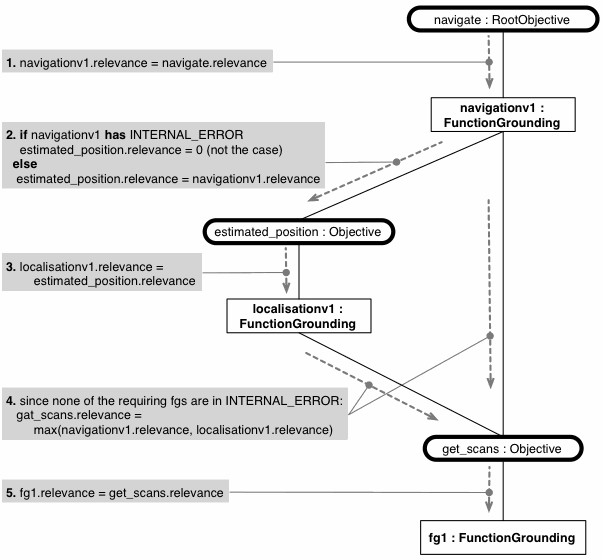

java.lang.Thread
org.aslab.om.ecl.ECL
org.aslab.om.metacontrol.FunctionalECL
java.lang.Thread
org.aslab.om.ecl.ECL
org.aslab.om.metacontrol.FunctionalECL
|
|||||||||||
| PREV CLASS NEXT CLASS | FRAMES NO FRAMES | ||||||||||
| SUMMARY: NESTED | FIELD | CONSTR | METHOD | DETAIL: FIELD | CONSTR | METHOD | ||||||||||
java.lang.Object
public class FunctionalECL
Implementation of a control loop for functions
The activity diagram for this class looks as follows
| Nested Class Summary |
|---|
| Nested classes/interfaces inherited from class java.lang.Thread |
|---|
java.lang.Thread.State, java.lang.Thread.UncaughtExceptionHandler |
| Field Summary | |
|---|---|
private java.util.Set<OMFGrounding> |
faults
|
private java.util.Set<OMFGrounding> |
fgroundings
|
private FunctionalGoalTracker |
goalState
|
| Fields inherited from class org.aslab.om.ecl.ECL |
|---|
actuator, goal, kb, perceptor, sensor, tstep |
| Fields inherited from class java.lang.Thread |
|---|
MAX_PRIORITY, MIN_PRIORITY, NORM_PRIORITY |
| Constructor Summary | |
|---|---|
FunctionalECL(KnowledgeBase k,
ComponentsECL lowerLoop)
|
|
| Method Summary | |
|---|---|
private void |
actionExecution(FunctionalAction action)
|
protected void |
control()
|
protected void |
evaluate()
|
private java.util.Set<OMFSpec> |
functions2ground(java.util.Set<OMObjective> objectives)
Deprecated. |
private java.util.Set<OMFGrounding> |
generateCompleteSolution(OMObjective objective)
instantiate all the fgroundings requires to address an objective |
private FunctionalAction |
generateComponentsSpec(java.util.Set<OMFGrounding> design)
method pertaining to the control of functions |
private java.util.Set<OMFGrounding> |
generateReqDesign(java.util.Set<OMObjective> objectives)
obtain the fgroundings required |
private OMFGrounding |
obtainBestSolution(OMObjective objective)
grounds the appropriate function for this objective |
protected void |
perceive()
The perception process takes as sensory input the feedback of the Components Goal from the ComponentsECL, and updates from it the functional state of the domain control system, eventually the state of achievement of the objectives. |
private void |
printAction(FunctionalAction action)
|
protected void |
resetInternalState()
the goal is set to null, more should be done |
void |
setGoal(Goal g)
|
private java.util.Set<OMFGrounding> |
updateFGInternalStatus()
|
private void |
updateHierarchyStatus(java.util.Set<OMFGrounding> faults)
updates status by propagating faults so as to have all failures |
| Methods inherited from class org.aslab.om.ecl.ECL |
|---|
getTstep, pauseECL, resumeECL, run, setActuator, setSensors, setTstep, startECL, stopECL |
| Methods inherited from class java.lang.Thread |
|---|
activeCount, checkAccess, countStackFrames, currentThread, destroy, dumpStack, enumerate, getAllStackTraces, getContextClassLoader, getDefaultUncaughtExceptionHandler, getId, getName, getPriority, getStackTrace, getState, getThreadGroup, getUncaughtExceptionHandler, holdsLock, interrupt, interrupted, isAlive, isDaemon, isInterrupted, join, join, join, resume, setContextClassLoader, setDaemon, setDefaultUncaughtExceptionHandler, setName, setPriority, setUncaughtExceptionHandler, sleep, sleep, start, stop, stop, suspend, toString, yield |
| Methods inherited from class java.lang.Object |
|---|
clone, equals, finalize, getClass, hashCode, notify, notifyAll, wait, wait, wait |
| Field Detail |
|---|
private FunctionalGoalTracker goalState
private java.util.Set<OMFGrounding> fgroundings
private java.util.Set<OMFGrounding> faults
| Constructor Detail |
|---|
public FunctionalECL(KnowledgeBase k,
ComponentsECL lowerLoop)
k - lowerLoop - | Method Detail |
|---|
public void setGoal(Goal g)
setGoal in class ECLg - protected void control()
control in class ECLprotected void perceive()
Perception model at the function level -- here is a schematic account of the rules that form the perception model for functions (objectives, functions, function grounding and function specifications)
The following image shows an example of the upstream propagation of errors
perceive in class ECLprivate java.util.Set<OMFGrounding> updateFGInternalStatus()
private void updateHierarchyStatus(java.util.Set<OMFGrounding> faults)
faults - protected void evaluate()
The Evaluation process in the Function Loop does not follow the ECl Explicit Evaluation pattern, since no metrics for the domain of functions have been developed. The ECL evaluation process in the Functions Loop consists of the downstream propagation of the relevance of objectives, from the topmost root objectives (i.e. systems requirements) downwards to the bottom functions in the hierarchy tree of functions and objectives.
Evaluation model at the function level -- here is a schematic account of the rules that form the evaluation model for functions (objectives, functions, function grounding and function specifications)
The following image shows an example of this downstream propagation of relevances

evaluate in class ECL@Deprecated private java.util.Set<OMFSpec> functions2ground(java.util.Set<OMObjective> objectives)
objectives -
private OMFGrounding obtainBestSolution(OMObjective objective)
objective -
private java.util.Set<OMFGrounding> generateCompleteSolution(OMObjective objective)
objective -
private java.util.Set<OMFGrounding> generateReqDesign(java.util.Set<OMObjective> objectives)
objectives -
private FunctionalAction generateComponentsSpec(java.util.Set<OMFGrounding> design)
design -
private void actionExecution(FunctionalAction action)
action - private void printAction(FunctionalAction action)
action - protected void resetInternalState()
resetInternalState in class ECL
|
|||||||||||
| PREV CLASS NEXT CLASS | FRAMES NO FRAMES | ||||||||||
| SUMMARY: NESTED | FIELD | CONSTR | METHOD | DETAIL: FIELD | CONSTR | METHOD | ||||||||||